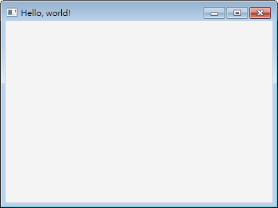
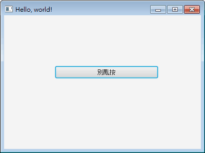
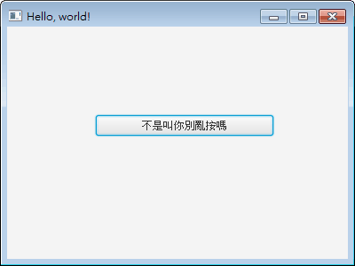
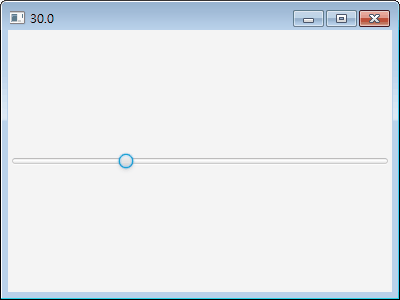
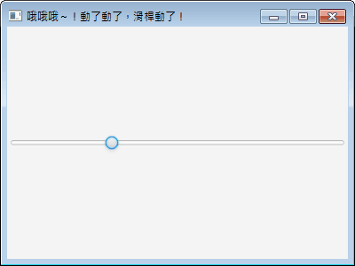
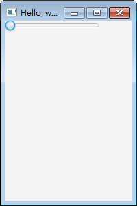

JavaFX Application 圖形化介面程式設計入門
Java SE 8 開始，JavaFX 正式成為 Java 主要的圖形化介面開發套件，Swing 將不再更新，只會維持相容性工作。
原本想說，未來設計視窗應用程式，應該使用 JavaFX 才對！打臉的是，只有 Oracle Java SE 內建，開始收費後大家改用的 OpenJDK 並未內建，必須另外下載：
http://openjfx.io
這樣的話，Swing 才是 OpenJDK 首選！忘了 JavaFX 吧～
建立基本視窗
用 JavaFX API 建立視窗應用程式，語法比 AWT 或 Swing 簡潔許多，因為直接就有個 Application 類別可用，設計起來像 Applet 短小精幹：

不需要 main()，Application 的 start() 就可以當程式入口，啟動 JavaFX 應用程式。
但混用新舊版本的 API 功能時，沒有 main() 可能會發生相容性問題，這時再寫上去，然後在裡面呼叫 Application 的 launch()：
加入控制項
底下示範如何在 Application 中加入「按鈕」，依樣畫葫蘆就能加入其它控制項：

如果不使用 Pane，直接 stage.setScene(new Scene(button)) 的話，會使用 Application 預設的面板管理器，以相對位置配置按鈕的大小與座標，按鈕會被放大到填滿整個視窗畫面，白寫 setPrefSize()、setLayoutX()、setLayoutY()。
加入事件
底下示範為按鈕（Button）加入觸發動作（onAction）的事件：

On 系列的事件，結構固定是 Handeler 裡面僅一個 handle() 等著覆寫，也就是符合 functional interface 的規則，因此可改用 Lambda 語法：
聆聽屬性
JavaFX 的控制項，屬性通常可用 控制項.xxxProperty().addListener() 的格式加入事件，表示監聽該屬性的狀態。只要這個屬性發生狀況，就會觸發事件。
這個功能有兩種實作，一種是 ObservableValue.addListener(ChangeListener)，它需要三個參數，可以表示屬性變化前的值與變化後的值。底下範例將監聽 Slide 的 value 屬性，並將變化後的值顯示在視窗標題上：

一種是 Observable.addListener(InvalidationListener)，只需一個參數，適用於值不會變化的屬性、或者對屬性值變化沒興趣的場合。底下範例一樣監聽 Slide 的 value 屬性，一有反應就在視窗標題顯示文字：

綁定屬性
有時候希望控制項的屬性內容，會隨著另一個控制項的屬性內容而變化。JavaFX 為屬性提供了 bind() 功能，簡單就能做到這件事！
底下示範視窗的 minWidth 和 maxWidth 兩個屬性，與滑桿的 value 屬性綁在一起，這樣滑動滑桿的同時會調整視窗大小：

希望互相綁定的話，改用 bindBidirectional()。
更多
更多 JavaFX 控制項的設計，請參考 Oracle 官方部落客 Alla Redko 寫的《Using JavaFX UI Controls》，雖然是英文網站，但範例寫得很簡單明瞭，光看範例就能學會各個控制項的用法。